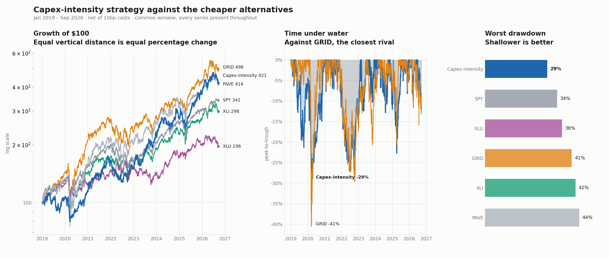

Strategy summary — 22 September 2026
| Classification | Long/short equity, sector-focused (US power & electrification) |
| Objective | Capture the electricity build-out through the firms that supply it, partly funded by shorting the firms that finance it |
| Universe | ~150–190 US-listed issuers, defined mechanically from regulatory filings |
| Positions | ~22 long / ~22 short |
| Turnover | ~1.0× per annum |
| Risk control | 20% annualised volatility target |
| Capacity constraint | Short book borrow (see §6) |
| Status | Implemented and tested. Not live; results are simulated. |
US electricity demand has inflected after two decades of flat consumption. Meeting it requires capital — generation, transmission, substations, switchgear, and the construction labour to install it.
That capital is raised and spent by one set of companies, and earned by another.
Utilities, pipelines and miners fund the build-out and earn a regulated or commodity return on assets they must carry. Equipment manufacturers, electrical contractors and fuel-cycle suppliers are paid by the build-out and carry comparatively little of it on their own balance sheets.
Both are exposed to the same activity. Only one converts it into revenue without simultaneously converting it into depreciation, rate-base risk and financing need.
The strategy is long the second group and short the first. The separating measure is drawn from a single line item every issuer is required to file, and is computed strictly from information available on the day it was filed.
The universe is assembled from regulatory classification rather than an index provider's sector labels. Two consequences matter:
Both decisions are documented and reproducible internally, and are the principal reason the book differs from listed alternatives holding nominally similar names.
Net of transaction costs. Risk-free rate 4%. The selection measure was identified using data through 2022; 2023 onward is out-of-sample.
| period | CAGR | Volatility | Sharpe | Max drawdown | Calmar |
|---|---|---|---|---|---|
| 2019–2022 (in-sample) | 11.0% | 21.1% | 0.41 | −29.1% | 0.38 |
| 2023–2026 (out-of-sample) | 31.8% | 21.1% | 1.23 | −22.7% | 1.40 |
| 2025–2026 (out-of-sample) | 29.5% | 21.6% | 1.12 | −22.6% | 1.30 |
| 2019–2026 | 20.6% | 21.1% | 0.80 | −29.1% | 0.71 |

Related exposure can be bought through listed funds. The relevant question is whether the strategy improves on them after their published fees.
| 2023–26 Sharpe | 2023–26 Calmar | 2025–26 Sharpe | 2025–26 Calmar | fee | |
|---|---|---|---|---|---|
| Capex-intensity | 1.23 | 1.40 | 1.12 | 1.30 | — |
| Smart-grid ETF | 1.02 | 1.15 | 0.88 | 1.17 | 0.57% |
| Infrastructure ETF | 1.04 | 0.94 | 0.57 | 0.64 | 0.47% |
| S&P 500 | 1.11 | 1.13 | 0.80 | 0.93 | 0.09% |
| Industrials sector | 0.95 | 0.99 | 0.59 | 0.79 | 0.08% |
| Utilities sector | 0.30 | 0.47 | 0.22 | 0.51 | 0.08% |
The strategy exceeds every listed alternative on both measures in both periods. The utilities sector — the most direct unmanaged expression of electricity exposure — is the weakest, consistent with the thesis, since utilities constitute the short book.
6.1 Cycle dependence. Returns are earned while the capital cycle runs; in-sample Sharpe was 0.41. A formal exit condition is specified internally and monitored quarterly.
6.2 Rate environment. Although the book carries no measurable duration beta, it performs materially better when real yields are high or rising (Sharpe 0.95) than when they are low or falling (0.58). A sustained easing cycle is the adverse environment.
6.3 Short-side borrow. Several short-book constituents are small and may be unborrowable. The short book should be assumed partially unfillable, which caps capacity.
6.4 Concentration. Approximately 22 positions per side in a single sector.
6.5 Correlation to related mandates. Correlation to a long-only electrification book is approximately 0.78. This is not an independent allocation.
7.1 Survivorship. Price history is sourced from a provider that does not carry delisted securities. The long book is therefore flattered by the absence of failures and the short book understated. Resolution requires survivorship-free pricing, which is a stated pre-live condition.
7.2 Simulated. No capital has been allocated. All results are simulated and net of assumed costs.
7.3 Selection risk. The selection measure was chosen from a set of candidates evaluated against historical outcomes. The specification requires no such reference once stated, but forward observation is the only conclusive test.
7.4 Factor overlap. The measure is related to documented quality and capital-discipline factors. The strategy is a sector-specific application rather than an independent anomaly.
Full specification, leg-level attribution, lexicon design study, cross-sector tests and the complete weakness register are held internally and available under agreement.